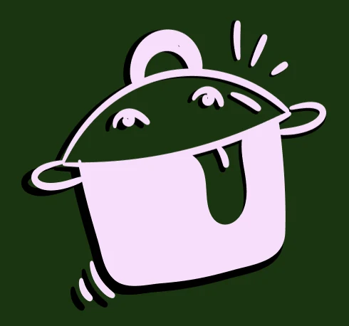

Universitaire
la cantine de suzette
Le site vitrine d'une cantine à la cuisine principalement végétale, avec une identité gourmande et dessinée à la main qui donne envie de passer à table.

l'identite
Une casserole qui tire la langue comme mascotte, une typographie très grasse et arrondie pour les titres, une écriture manuscrite pour les touches plus personnelles et des contours tracés à la main : vagues entre les sections, légumes griffonnés, cocktails illustrés.
[Explique ici l'intention : pourquoi cette mascotte, ces couleurs, ce ton ?]
- sapin
- crème
- lilas
- citron
- noir
le site
Une seule page qui se découvre au scroll, dans l'ordre du menu : histoire, menu, localisation, contact.


le brief
[Quelle était la consigne ? Créer l'identité et le site d'un restaurant imaginaire ? Quelles contraintes ?]
mon role
[Ce que tu as fait : la mascotte, les illustrations, les maquettes du site…]
ce que j'en retiens
[Ce que tu as appris sur ce projet.]